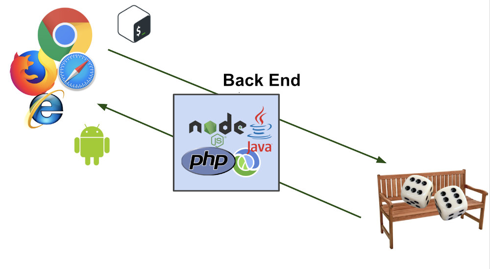

Introdução Última atualização: 29/11/2021
Primeiros passos - O que é Web e Desenvolvimento Web? Front End vs Back End. Ferramentas e utilitários ...
Nota
Se você não possui conhecimentos sobre lógica de programação recomendamos assistir esse Vídeo do canal Dev Aprender
Hello World! 1.1
Olá! Bem-vindo a capacitação de Desenvolvimento Web. Esse treinamento foi criado para membros do Einstein Floripa com pouco ou nenhum conhecimento sobre desenvolvimento Web se capacitarem na área. É recomendado possuir antes somente uma boa noção de lógica de programação.
A capacitação está dividida em três grandes módulos:
- Introdução (Estamos aqui agora)
- Front End
- Back End
(Explicamos cada termo mais pra frente)
Cada módulo possui uma ou mais seções abordando algum conceito ou tecnologia que por sua vez é divido em diversos tópicos (Confira todos os tópicos e seções na barra lateral de cada módulo).
Após finalizar esse módulo introdutório você poderá seguir diretamente para Front End ou diretamente para Back End. Caso seu objetivo seja realizar os dois módulos recomendamos fazer primeiro o módulo de Front End e depois Back End.
Para maior aproveitamento da capacitação recomenda-se ver todos os conteúdos disponibilizados e realizar todos os desafios. Procure realizar a capacitação com o acompanhamento de alguém com mais experiência em Desenvolvimento Web para tirar eventuais dúvidas ou dar feedback da resolução de desafios
Todos os conteúdos apresentados estão disponíveis gratuitamente na internet. Conheça alguns dos criadores de conteúdos e outras fontes de informações que foram utilizadas:
Youtube: Código Fonte TV DevMedia TecMundo Rafaella Ballerini Girl Coding dpw Ferreira Studios Alura Cursos Online Felipe Fialho Origamid Programador BR Rocketseat O Irmão mais Velho Dev Aprender Filipe Deschamps Fireship
Portais, artigos e notícias: Portal Devmedia Portal Origamid MDN Web Docs w3schools w3c oficinadanet kadunew techtudo treinaweb brasilcode
Jogos, interfaces outros recursos interativos: Codepip Flukeout Xiaoying Riley
O que é Web 1.2
Web é uma palavra inglesa que significa teia ou rede. O significado de web ganhou outro sentido com o aparecimento da internet. A web passou a designar a rede que conecta computadores por todo mundo, a World Wide Web (WWW)
De forma sucinta podemos definir Web com o conjunto de conteúdos que chegam até o seu navegador via Internet, ou seja, ela é um caminho pelo qual você pode usufruir do conteúdo transferido pela internet.
O que faz o Desenvolvedor Web 1.3
Em essência um desenvolvedor web realiza o desenvolvimento de websites na internet. Ele é o responsável por toda a estrutura de um determinado site. Ou seja, planeja, constrói e dá manutenção para tudo que roda em uma plataforma da web.
Hoje a Web é ainda um das principais áreas do desenvolvimento de software e tem crescido continuamento no últimos anos ainda que competindo bastante de Desenvolvimento Mobile, Desktop e sistemas embarcado.
Front End 1.4
Um Desenvolvedor Front End cuida da parte "visual" de um site, sendo responsável pela implementação da interface gráfica em uma aplicação.
Atenção
Não confundir com Web Designer. Um Web designer cuida da criação e planejamento da interface gráfica, geralmente utilizando ferramentas de desenho gráfico (Photoshop, Illustrator, Adobe XD, Figma, Sketch ...), já o Front End Developer cuida da implementação/codifição da interface criada pelo Web Designer.
Quando falamos em desenvolvimento Web as tecnologia utilizados são essencialmente HTML, CSS e JavaScript (Existem outras frameworks e tecnologias que podem ser usadas em conjunto ou substituindo a necessidade de escrever código nessas linguagens, mas no final tudo é compilado/interpretado para essas três).
O Código Front End de um desenvolvedor Web é interpretado por um navegador Web (Chrome, Edge, Firefox, Opera, Safari etc...) no computador do cliente
- HTML: (Linguagem de Marcação de HiperTexto) - Estrutura ou esqueleto da página - https://developer.mozilla.org/pt-BR/docs/Web/HTML
- CSS: (Folhas de Estilo em Cascata) - Estilização da página, define como os elementos HTML serão exibidos - https://developer.mozilla.org/pt-BR/docs/Web/CSS
- JavaScript: Interatividade/Lógica da página - https://developer.mozilla.org/pt-BR/docs/Web/JavaScript
Back End 1.5
É a parte de "trás" da aplicação, servindo como ponte entre o Navegador e o Banco de Dados. No backend existem diversas tecnologias que podem ser utilizadas, para programação em si temos linguagens como PHP, Python, Java, Javascript…
O Código Back End de um desenvolvedor Web é executado em um servidor que é responsável por fornecer serviços aos computadores de clientes que estão acessando o sistema e interagir com o Front End por meio de APIs e com o Banco de Dados da aplicação
Nota
Um desenvolvedor que domina Back End e Front End é chamado de Desenvolvedor Full Stack
Dessa forma estabelecemos a arquiterura cliente-servidor, tendo o client-side envolvendo linguagens processadas pelo navegador do usuário (Front End). E o server-side fazendo referência ao que é processado no servidor (Back End).

Navegadores e Devtools 1.6
Leia: O que é um navegador web?
Leia: 10 Navegadores mais usados no mundo
Como visto o navegador executa um importante papel de interpretação do sistema Web, uma vez que ele é a ponte entre o usuário final e o nosso sistema Web.
Navegadores podem interpretar determinados trechos do código do Front End de forma diferente e afetar a navegabilidade, um dos desafios de um desenvolvedor web é fazer um código consiso em grande parte dos navegadores para não prejudicar a experiência de alguma porcentagem significativa de clientes.
O Google Chrome é o navegador mais popular atualmente, além de ocupar de ocupar cerca de 70% do mercado existem outros projetos que são baseados no projeto open source Chromium e acabam por interpretarem o código de forma bem semelhante ou igual ao Chrome, é o caso do Edge, Opera, Brave, UC e outros. Em seguida temos o Firefox da Mozilla, Safari da Apple e o Internet Explorer da Microsoft
Atenção
Apesar da Microsoft já ter anunciado o fim do suporte Internet Explorer e ter
declarado a morte do mesmo, icetivando os usuários a usarem o Edge,
ainda
existe uma parcela de usuários utilizando esse dinossauro navegador.
Dificilmente um sistema web atual consegue atender as especificidades do IE, sendo
mais simples instruir os usuários a acessar sua aplicação Web de um navegador
diferente do que adaptar o código da interface.
Senta que lá vem história...
O Chrome DevTools é um conjunto de ferramentas para desenvolvedores da Web integradas diretamente no navegador Google Chrome (Outros navegadores possuem sua ferramentas próprias, mas vamos nos aprofundar na do Chrome). Essas ferramentas permitem inspecionar o HTML (DOM) renderizado, ver atividade de rede, visualizar o console, tendo bastante utilidade para debug de sua aplicação Web ou inspecionar o código Front End de uma página Web.